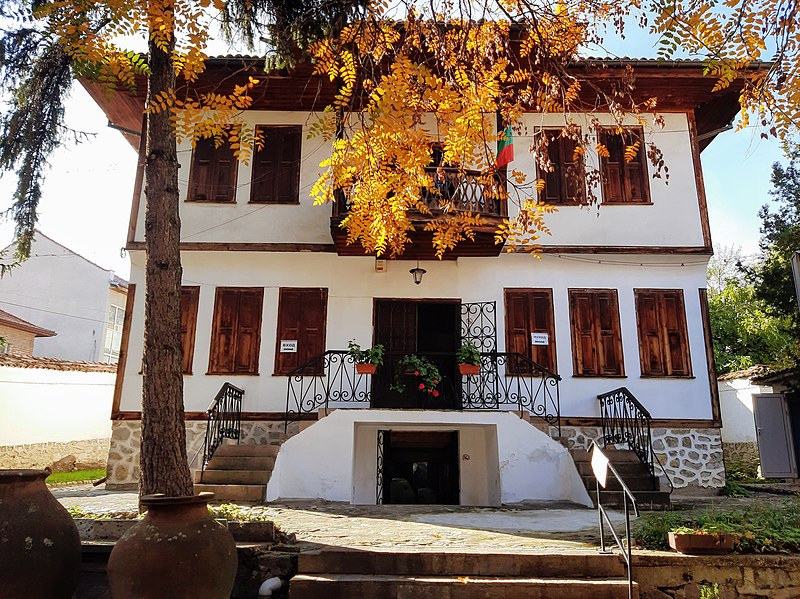
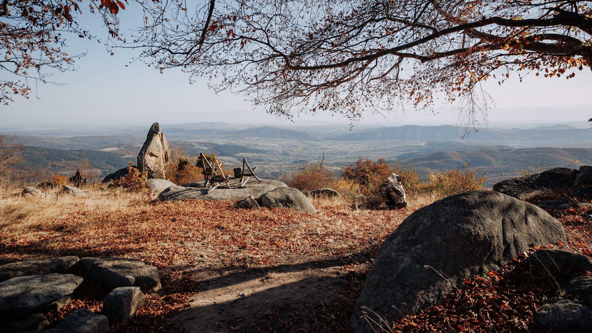

Град Стрелча се намира в планински район. Той лежи в Същинска Средна гора. На север от него се намира връх Буная (1572 m).
През Стрелча тече река Стрелчанска Луда Яна. Тя се влива в Панагюрска Луда Яна малко след село Попинци и така
образуват река Луда Яна. Съседни населени места са: град Панагюрище (12 km на запад), град Копривщица (22 km на север),
село Кръстевич (11 km на изток) и село Дюлево (8 km на юг). Стрелча се намира на 40 km от областния център Пазарджик,
на 65 km от Пловдив и на 100 km от столицата София.

Историческият музей в Стрелча - създаден през 2002 г.
Най-голямото богатство на Стрелча, минералната вода, е гореща (стига до 38 – 40 °C),
слабо минерализирана и с ниска твърдост. Тя лекува опорно-двигателния апарат, нервната система, сърдечносъдови
заболявания, проблеми на дихателните пътища, гинекологични заболявания. Приложението на такива лечения е
осигурено в балнеосанаториума, който предлага и медицинска консултация.
Днес на мястото на старата има нова съвсем модерна баня и нов закрит плувен басейн с размери 10 на 18m.
Освен банята в центъра на града, в покрайнините на Стрелча се намира още едно минерално чудо.
В ролята на откривател се явила биволица. Нещастното говедо едва мъкнело заради болните си крака,
докато влязло в локвата да се разхлади, тогава за изненада на стопанина си излязло здраво. Така били забелязани
лечебните свойства на минерален извор "Банчето", известно като „Златното Банче“. През 1935г. изворът е каптиран.
Днес два нови басейна лекуват периферната нервна система, опорно-двигателния апарат, вътрешните органи,
подобрява се сънят, самочувствието и апетитът. Температурата на водата е 30,5 °C. А според свидетели ефектът
след 10 – 12 бани е магически.
История
Различни епохи са оставили своя отпечатък върху облика на Стрелча през нейната многовековна история. На територията
на общината има запазени следи от присъствието на праисторически хора, траки, славяни, византийци, римляни и българи.
Историческите паметници в Стрелча и околностите ѝ все още напомнят за традициите, начина на живот и обратите в
историческата съдба на хората, обитавали тези земи в продължение на векове.

Гр. Стрелча, общ изглед от м. Арбут
Древност и средновековие
Първите запазени следи са от стъпките на траките. Бесите идват и се установяват трайно в региона в края на Старата ера.
Те присъстват неизменно в гръцките хроники като смели и свободолюбиви воини, почитащи Дионис. За няколкото века,
в които са господствали над земите край Стрелча, те са оставили след себе си над 300 могили в чест на знатните
си мъртъвци. От тази епоха датира един от най-внушителните исторически паметници на територията на Стрелча –
уникалният тракийски култов комплекс Жаба могила, съставен от гробница-мавзолей и светилище–храм.
Бесите окончателно загубили своето могъщество през 45 г. сл. Хр., когато римляните ги покорили и тракийските земи
били включени в новообразуваната провинция Тракия.
Районът, както и цяла Южна Тракия, е включен в пределите на Първата българска държава през IX в. От тази епоха е
и крепостта Стрелчанско кале, която просъществува до XIV век. Разположена е на десния бряг на р. Стрелчанска Луда Яна
и със своите 8–метрови защитни стени ясно илюстрира характера на епохата. В продължение на векове в подножието ѝ е
процъфтявал град – Стрельч или Стрелец–град. От неговото име произлиза и сегашното наименование на Стрелча.
Възраждане и съвременност
През епохата на Възраждането Стрелча е развито стопанско и книжовно средище, с буден и неуморен дух за просвета,
духовно потребление и жажда за свобода. Още на 20 април 1876 г. стрелчани се включват в Априлското въстание и
впоследствие са жестоко наказани за смелостта си – градът е опожарен.
Едва след Освобождението жителите на региона се завръщат по родните си места. По това време е построен храм–паметникът
„Св. Архангел Михаил“.
На 23 август 1969 г. Стрелча е обявена за град и курорт с национално значение.